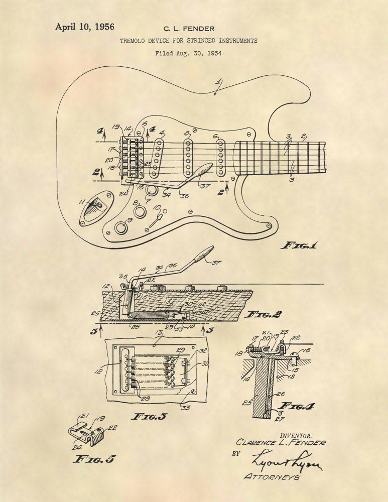

Stratocaster 1954
A patente do modelo original, conhecido por seu timbre cristalino e design inovador.
Stratocaster
Jimi Hendrix
"Black Beauty" 1968, a guitarra favorita de Hendrix, famosa por performances lendárias nos anos 60 e 70.
Stratocaster
Eric Clapton
"Crashocaster" nos anos 2000, customizada para um dos maiores guitarristas de todos os tempos, Eric Clapton.